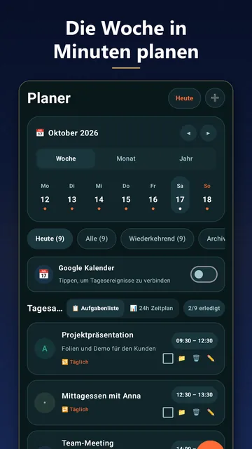
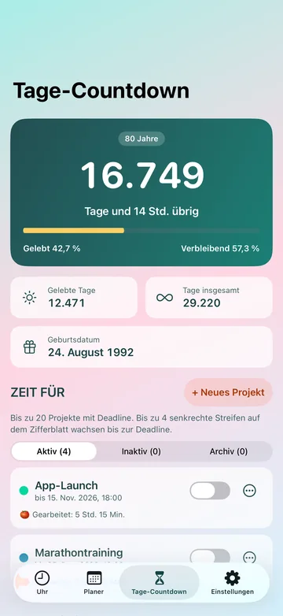
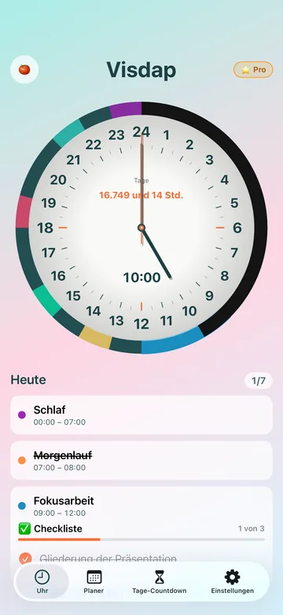
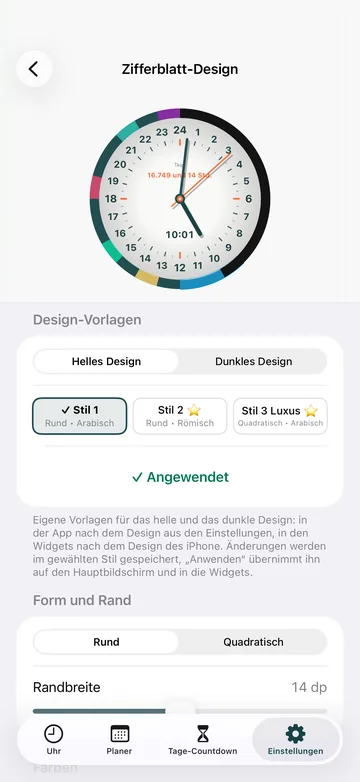
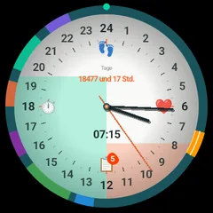
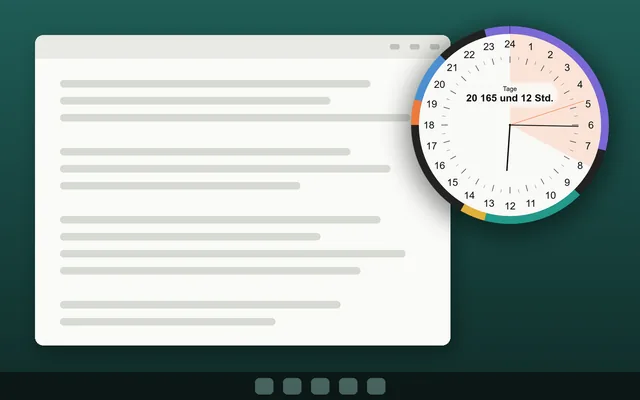

Free
- Bis zu 2 Aufgaben pro Tag
- Ihr Tag auf dem 24-Stunden-Zifferblatt
- Ohne Konto und Werbung
Visueller Tagesplaner
Visdap macht aus Ihren Plänen farbige Sektoren rund um eine 24-Stunden-Uhr: Ein Blick zeigt, was als Nächstes kommt und wie viel vom Tag bleibt.
Für den Kauf von Pro ist eine Internetverbindung nötig.
Demnächst: iPhone · Mac
Schreiben Sie mir, und ich melde mich, sobald es da ist
Für Android-Smartphones, Wear-OS-Uhren und Windows-PCs.

Ein Zifferblatt, gestreckt auf alle 24 Stunden. Nach einer Minute liest es sich von selbst.
Geben Sie jeder Aufgabe eine Uhrzeit, eine Farbe und bei Bedarf eine Erinnerung.
Aufgaben erscheinen als Sektoren auf einer 24-Stunden-Uhr: in der App, im Widget und auf Ihrer Uhr.
Erinnerungen mit Ton und Schlummerfunktion sagen Ihnen, wann es Zeit zum Wechseln ist.
Zwei kurze Videos: Visdap in 40 Sekunden und wie Projekte funktionieren.
Die Videos haben keinen Ton, der Text im Bild ist auf Englisch.

Monats- und Jahreskalender, Prioritäten S/A/B/C und Checklisten für jede Aufgabe.
Laute Erinnerungen mit Ton und Schlummerfunktion, genau zur richtigen Zeit.

25 Minuten Fokus, dann eine Pause. Jede Sitzung wird mit einer kurzen Notiz einem Projekt gutgeschrieben.
Bis zu 20 Projekte. Deadline-Streifen wachsen jeden Tag auf dem Zifferblatt, bis zu 4 gleichzeitig.
Sehen Sie, wie viele Tage Sie wirklich haben, und nutzen Sie sie für das Wesentliche.

Der ganze Tag auf einem Zifferblatt, ohne AM/PM-Verwirrung. Rund oder eckig, arabische oder römische Ziffern.
Eine 24-Stunden-Uhr und eine Aufgabenliste auf dem Android-Startbildschirm; unter Windows steht das Zifferblatt auf dem Desktop.

Helles und dunkles Design, eigene Farben und Schriften sowie Luxus-Zifferblätter in Gold, Platin und Edelsteinen.

Visdap für Wear OS zeigt Ihren Tag auf einem 24-Stunden-Zifferblatt direkt auf der Uhr.
Unter Windows steht das 24-Stunden-Zifferblatt auf dem Desktop und kann über anderen Fenstern bleiben. Sie sehen, wie viel von einem Arbeitsblock übrig ist, ohne die App zu wechseln.

Kostenlos · Android 8.0 oder neuer · Wear-OS-Uhren brauchen ein Android-Handy
Android-WidgetKostenlos · Windows 10 (ab Version 1809) und Windows 11
Desktop-Uhr für WindowsDemnächst
Schreiben Sie mir, und ich melde mich, sobald es da istDemnächst
Schreiben Sie mir, und ich melde mich, sobald es da ist| Funktion | Android | Wear OS | Windows | iPhone und Mac |
|---|---|---|---|---|
| 24-Stunden-Zifferblatt mit Aufgaben | Ja | Ja | Ja | Demnächst |
| Widgets auf dem Startbildschirm | Ja | Nein | Auf dem Desktop | |
| Kachel und Komplikationen | Nein | Ja | Nein | |
| Erinnerungen | Mit Ton | Vibration | Mit Ton | |
| Pomodoro und Projekte | Ja | Nein | Ja | |
| Kostenlose Version | 2 Aufgaben pro Tag, bis zu 7 Tage im Voraus | Zeigt Aufgaben vom Smartphone | 2 Aufgaben pro Tag, für heute |
Kostenlos starten. Zu Pro wechseln, wenn Sie mehr möchten.
Pro ist ein Monats- oder Jahresabo. Den Preis sehen Sie in Ihrem Store.
Endet Pro, wird nichts gelöscht, was Sie erstellt haben. Die Free-Grenzen gelten nur für neue Aufgaben.
Keine Registrierung. App öffnen und planen.
Ihre Pläne liegen auf Ihrem Smartphone, Ihrer Uhr oder Ihrem PC. Wir haben keine Server, und die App enthält weder Werbung noch Analyse.
Unter Android kann Visdap Ihren Kalender lesen, um Termine neben Ihren Aufgaben anzuzeigen. Hineinschreiben kann es nicht.
Keine Cookies, keine Analyse, keine Skripte Dritter. Store-Links teilen dem Store nur mit, dass Sie von dieser Website kommen.
Vorlesungen, Lernzeiten und Schlaf auf einem Kreis: Sie sehen, wann noch Zeit zum Lernen bleibt.
Arbeitsblöcke und Pausen auf dem Zifferblatt, mit Pro auch ein Pomodoro-Timer.
Die Aufgaben des Tages und Besorgungen, mit Erinnerungen zur richtigen Zeit.
Für alle, die Zeit besser erfassen, wenn sie sie sehen.
Nein. Visdap funktioniert ohne Registrierung, und Ihre Pläne werden auf Ihrem Gerät gespeichert.
Ein Kalender listet Termine auf. Visdap zeichnet den ganzen Tag als Uhr, sodass Sie sehen, wie die Zeit vergeht und wo Lücken zwischen Aufgaben sind. Unter Android kann es Kalendertermine neben Ihren Aufgaben anzeigen, nur lesend und ohne sie zu ändern.
Ja. Planung, Erinnerungen und Widgets funktionieren offline. Nur der Kauf oder die Wiederherstellung von Pro braucht eine Verbindung zum Store.
Beide sind in Arbeit. Derzeit gibt es Visdap für Android-Smartphones, Wear-OS-Uhren und Windows.
Unbegrenzt viele Aufgaben, Projekte auf dem Zifferblatt, wiederkehrende Aufgaben, Planung für jedes Datum, Pomodoro, alle Zifferblatt-Stile einschließlich Luxus und einen eigenen Erinnerungston. Pro ist ein Monats- oder Jahresabo; den Preis zeigt Ihr Store an.
Sie bleiben. Nichts, was Sie erstellt haben, wird gelöscht; die Free-Grenzen gelten nur, wenn Sie neue Aufgaben hinzufügen.
Nein. Weder die kostenlose Version noch Pro zeigt Werbung.
Nein. Visdap hilft Ihnen, Ihre Zeit zu planen und zu sehen. Es ist kein Medizinprodukt und diagnostiziert oder behandelt nichts.
Englisch, Ukrainisch, Deutsch, Spanisch und Französisch.
Schreiben Sie uns eine E-Mail, wir lesen jede Nachricht: oleksandr.miletskyi@gmail.com